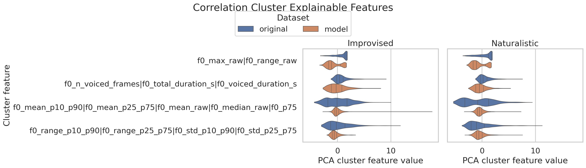
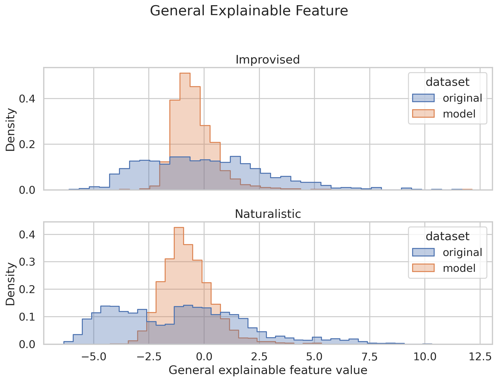

Data, Models, and Setup
Data
| metric | Improvised dev | Improvised test | Naturalistic dev | Naturalistic test | Total |
|---|---|---|---|---|---|
| Unique original dialogues | 270 | 181 | 480 | 511 | 1442 |
| Selected dialogues | 1165 | 994 | 1529 | 1731 | 5419 |
| Hours of questions | 4.78h | 3.76h | 6.76h | 7.47h | 22.77h |
| Hours of original answers | 2.67h | 2.29h | 5.23h | 4.36h | 14.56h |
| Original total hours | 7.45h | 6.05h | 12.00h | 11.83h | 37.33h |
| Hours of generated answers | 6.97h | 5.96h | 9.21h | 10.30h | 32.44h |
| Mean original answer length | 8.26s | 8.28s | 12.32s | 9.07s | |
| Mean generated answer length | 19.20s | 19.37s | 19.91s | 19.30s |
Models
| parameter | value |
|---|---|
| LLM model used for inference | gpt-realtime-2 |
| ASR models used | Qwen3-ASR-0.6B, whisper-large-v3 |
| Language ID model | facebook/mms-lid-126 |
| Dialect ID model | tiantiaf/voxlect-english-dialect-whisper-large-v3 |
| LLM used for stance | gpt-audio-1.5 |
| Statistical tests used for p-values | Mann-Whitney U Test |
| UTMOS model | tarepan/SpeechMOS:v1.2.0 utmos22_strong |
| VAD model | silero-vad |
Setup
| parameter | value |
|---|---|
| protocol | seamless_2t_2s_questions |
| selection_method | end_with_question |
| min_turns | 2 |
| min_speakers | 2 |
| splits | dev,test |
| subsets | improvised,naturalistic |
| data_root | data/seamless_2t_2s_questions |
| results_root | results/seamless_2t_2s_questions |
Intelligibility and Interruption Metrics
| Metric | System | model_mean_naturalistic | original_mean_naturalistic | model_mean_improvised | original_mean_improvised |
|---|---|---|---|---|---|
| CER | Qwen3-ASR-0.6B | 6.19 | 37.14 | 4.04 | 30.32 |
| CER | whisper-large-v3 | <NA> | <NA> | 6.94 | 23.63 |
| WER | Qwen3-ASR-0.6B | 15.30 | 48.43 | 13.39 | 42.09 |
| WER | whisper-large-v3 | <NA> | <NA> | 15.75 | 31.05 |
| UTMOS | 4.2670 | 2.1655 | 4.2882 | 2.3207 | |
| latency | 107.8084 | 929.6360 | 97.0190 | 415.3924 | |
| average number of interruptions per dialogues | 0.58 | 0.50 | 0.22 | 0.55 | |
| interrupted time (s) | 0.548 | 0.520 | 0.228 | 0.522 | |
| number of dialogues with interruption | 578/1921 | 545/1731 | 136/1107 | 377/994 |

Basic metric histogram gallery


Language and Dialect ID
| subset | % Eng in models' answers | % Eng in original answers | second most spoken language in original answers | percentage 2nd language in original answers |
|---|---|---|---|---|
| improvised | 100.0 | 99.73545 | Vietnamese | 0.088183 |
| naturalistic | 100.0 | 99.01332 | dan | 0.345338 |
| Subset | Question/Answer | East Asia | English | Germanic | Irish | North America | Northern Irish | Oceania | Other | Romance | Scottish | Semitic | Slavic | South African | Southeast Asia | South Asia | Welsh |
|---|---|---|---|---|---|---|---|---|---|---|---|---|---|---|---|---|---|
| improvised | Question | 0.347826 | 0.086957 | 0.086957 | 5.826087 | 83.391304 | 0.0 | 0.086957 | 0.000000 | 9.043478 | 0.086957 | 0.086957 | 0.347826 | 0.000000 | 0.434783 | 0.086957 | 0.0 |
| improvised | Answer | 0.000000 | 0.000000 | 0.000000 | 1.827676 | 97.476066 | 0.0 | 0.000000 | 0.000000 | 0.435161 | 0.000000 | 0.000000 | 0.000000 | 0.000000 | 0.261097 | 0.000000 | 0.0 |
| naturalistic | Question | 1.904297 | 0.585938 | 0.292969 | 4.638672 | 72.558594 | 0.0 | 0.244141 | 0.195312 | 16.748047 | 0.146484 | 0.292969 | 0.244141 | 0.341797 | 1.269531 | 0.341797 | 0.0 |
| naturalistic | Answer | 0.000000 | 0.000000 | 0.000000 | 1.272016 | 98.336595 | 0.0 | 0.048924 | 0.000000 | 0.097847 | 0.097847 | 0.000000 | 0.000000 | 0.000000 | 0.146771 | 0.000000 | 0.0 |


Emotional Naturalness

The relationship violin plot breaks naturalistic emotional naturalness logits down by relationship label.

The emotion scatter plot compares full-question and full-answer Arousal, Dominance, and Valence scores normalized to [-1, 1]. Dotted lines show per-dataset correlations with rho labels.

STANCE
Stance Descriptions
| stance | positive_original_% | negative_original_% | definition |
|---|---|---|---|
| Q0 | 81.9672131147541 | 18.0327868852459 | Based on the audio, does the TARGET speaker sound warm and affiliative, or cold and detached? |
| Q1 | 48.421052631578945 | 51.578947368421055 | Based on the audio, does the TARGET speaker sound compassionate and supportive, or callous and unsympathetic? |
| Q2 | 30.434782608695652 | 69.56521739130434 | Based on the audio, does the TARGET speaker sound polite and respectful, or rude and disrespectful? |
| Q3 | 18.681318681318682 | 81.31868131868131 | Based on the audio, does the TARGET speaker sound assertive and self-confident, or hesitant and inhibited? |
| Q4 | 62.19512195121951 | 37.80487804878049 | Based on the audio, does the TARGET speaker sound straightforward and sincere, or sly and manipulative? |
| Q5 | 100.0 | 0.0 | Based on the audio, does the TARGET speaker sound attentive and focused, or confused and distracted? |
| Q6 | 25.454545454545453 | 74.54545454545455 | Based on the audio, does the TARGET speaker sound organized and goal-driven, or disorganized and unmotivated? |
| Q7 | 65.57377049180327 | 34.42622950819672 | Based on the audio, does the TARGET speaker sound socially engaged and expressive with the other speaker, or withdrawn and disengaged? |
| Q8 | 41.07142857142857 | 58.92857142857143 | Based on the audio, does the TARGET speaker accommodate and yield to the other speaker’s preferences, or do they try to control and dominate? |
| Q9 | 0.0 | 100.0 | Based on the audio, does the TARGET speaker stay calm and avoid confrontation, or are they hostile and aggressive? |
Results
| dataset | STANCE same sign (%) | More positive (%) | More negative (%) |
|---|---|---|---|
| original | 100.000000 | 0.0 | 0.0 |
| gpt-realtime-2 | 94.889267 | 2.385008517887564 | 3.0664395229982966 |

Explainable Features
Explainable feature rows report model-minus-original mean differences, p-values, and the Stage 41 classification AUROC/accuracy. Correlation-cluster rows come from script 41 PCA cluster features.
Correlation Cluster Features
| subset | metric | mean_diff | std_diff | p_value | n | detail |
|---|---|---|---|---|---|---|
| improvised | corr_cluster_001_rho0p8 | -1.5455 | 1.7346 | 1.445e-153 | 1150 | script 41 PCA cluster feature model-original; p-value is Mann-Whitney U Test; source_features=f0_max_raw|f0_range_raw; validates_in_test=True; test_mean_abs_spearman=0.9864; pca_explained_variance_ratio=0.9991 |
| improvised | corr_cluster_002_rho0p8 | -0.1533 | 2.3400 | 0.6410 | 1150 | script 41 PCA cluster feature model-original; p-value is Mann-Whitney U Test; source_features=f0_mean_p10_p90|f0_mean_p25_p75|f0_mean_raw|f0_median_raw|f0_p75; validates_in_test=True; test_mean_abs_spearman=0.9581; pca_explained_variance_ratio=0.9795 |
| improvised | corr_cluster_003_rho0p8 | -0.7060 | 1.9128 | 5.191e-42 | 1150 | script 41 PCA cluster feature model-original; p-value is Mann-Whitney U Test; source_features=f0_n_voiced_frames|f0_total_duration_s|f0_voiced_duration_s; validates_in_test=True; test_mean_abs_spearman=0.9526; pca_explained_variance_ratio=0.9564 |
| improvised | corr_cluster_004_rho0p8 | -0.7186 | 2.2517 | 3.746e-08 | 1150 | script 41 PCA cluster feature model-original; p-value is Mann-Whitney U Test; source_features=f0_range_p10_p90|f0_range_p25_p75|f0_std_p10_p90|f0_std_p25_p75; validates_in_test=True; test_mean_abs_spearman=0.9355; pca_explained_variance_ratio=0.9567 |
| improvised | general_explainable_feature_rho0p8 | -0.4377 | 2.8663 | 0.0040 | 1150 | script 41 PCA cluster feature model-original; p-value is Mann-Whitney U Test; source_features=corr_cluster_001_rho0p8|corr_cluster_002_rho0p8|corr_cluster_003_rho0p8|corr_cluster_004_rho0p8; validates_in_test=True; test_mean_abs_spearman=nan; pca_explained_variance_ratio=0.5801 |
| naturalistic | corr_cluster_001_rho0p8 | -1.2504 | 1.9007 | 3.817e-178 | 2045 | script 41 PCA cluster feature model-original; p-value is Mann-Whitney U Test; source_features=f0_max_raw|f0_range_raw; validates_in_test=True; test_mean_abs_spearman=0.9935; pca_explained_variance_ratio=0.9989 |
| naturalistic | corr_cluster_002_rho0p8 | 0.3466 | 2.8902 | 2.729e-06 | 2045 | script 41 PCA cluster feature model-original; p-value is Mann-Whitney U Test; source_features=f0_mean_p10_p90|f0_mean_p25_p75|f0_mean_raw|f0_median_raw|f0_p75; validates_in_test=True; test_mean_abs_spearman=0.9694; pca_explained_variance_ratio=0.9709 |
| naturalistic | corr_cluster_003_rho0p8 | -0.8150 | 1.6072 | 3.275e-125 | 2045 | script 41 PCA cluster feature model-original; p-value is Mann-Whitney U Test; source_features=f0_n_voiced_frames|f0_total_duration_s|f0_voiced_duration_s; validates_in_test=True; test_mean_abs_spearman=0.9308; pca_explained_variance_ratio=0.9593 |
| naturalistic | corr_cluster_004_rho0p8 | 0.1114 | 2.2591 | 7.984e-26 | 2045 | script 41 PCA cluster feature model-original; p-value is Mann-Whitney U Test; source_features=f0_range_p10_p90|f0_range_p25_p75|f0_std_p10_p90|f0_std_p25_p75; validates_in_test=True; test_mean_abs_spearman=0.9214; pca_explained_variance_ratio=0.9188 |
| naturalistic | general_explainable_feature_rho0p8 | 0.3191 | 3.2023 | 1.141e-08 | 2045 | script 41 PCA cluster feature model-original; p-value is Mann-Whitney U Test; source_features=corr_cluster_001_rho0p8|corr_cluster_002_rho0p8|corr_cluster_003_rho0p8|corr_cluster_004_rho0p8; validates_in_test=True; test_mean_abs_spearman=nan; pca_explained_variance_ratio=0.5122 |


Improvised
Highest AUROC Features
| metric | mean_diff | std_diff | p_value | n | auroc | accuracy |
|---|---|---|---|---|---|---|
| f0_max_raw | -106.4510 | 130.4712 | 1.052e-128 | 1150 | 0.7906 | 0.7419 |
| f0_range_raw | -101.8113 | 131.6018 | 3.798e-116 | 1150 | 0.7758 | 0.7397 |
| f0_std_p10_p90 | -10.6383 | 18.4000 | 1.439e-56 | 1150 | 0.6908 | 0.6914 |
| f0_std_p25_p75 | -6.2489 | 11.6141 | 3.933e-51 | 1150 | 0.6811 | 0.6867 |
| f0_range_p10_p90 | -35.9713 | 65.3850 | 6.313e-48 | 1150 | 0.6751 | 0.6884 |
| f0_range_p10_p90 | -35.9713 | 65.3850 | 6.313e-48 | 1150 | 0.6751 | 0.6884 |
| f0_range_p25_p75 | -20.7671 | 38.6366 | 1.467e-47 | 1150 | 0.6744 | 0.6719 |
| f0_range_p25_p75 | -20.7671 | 38.6366 | 1.467e-47 | 1150 | 0.6744 | 0.6719 |
| f0_mean_raw | -23.4889 | 42.3642 | 5.569e-44 | 1150 | 0.6674 | 0.6506 |
| f0_mean_raw | -23.4889 | 42.3642 | 5.569e-44 | 1150 | 0.6674 | 0.6506 |
Lowest AUROC Features
| metric | mean_diff | std_diff | p_value | n | auroc | accuracy |
|---|---|---|---|---|---|---|
| f0_mean_p25_p75 | -17.5228 | 42.3023 | 2.173e-21 | 1150 | 0.3857 | 0.3116 |
| f0_median_raw | -17.0432 | 42.2753 | 5.174e-19 | 1150 | 0.3928 | 0.2868 |
| f0_total_duration_s | -0.9004 | 16.4759 | 0.6916 | 1150 | 0.5048 | 0.4809 |
| f0_n_voiced_frames | -58.3237 | 836.6529 | 0.3847 | 1150 | 0.5105 | 0.4983 |
| f0_voiced_duration_s | -0.5862 | 8.3676 | 0.3768 | 1150 | 0.5106 | 0.4978 |
| f0_voiced_duration_s | -0.5862 | 8.3676 | 0.3768 | 1150 | 0.5106 | 0.4978 |
| f0_mean_p10_p90 | -19.3232 | 42.8203 | 5.824e-27 | 1150 | 0.6294 | 0.5363 |
| f0_mean_p10_p90 | -19.3232 | 42.8203 | 5.824e-27 | 1150 | 0.6294 | 0.5363 |
| f0_p75 | -29.3724 | 56.7970 | 3.889e-41 | 1150 | 0.6617 | 0.6558 |
| f0_p75 | -29.3724 | 56.7970 | 3.889e-41 | 1150 | 0.6617 | 0.6558 |
Naturalistic
Highest AUROC Features
| metric | mean_diff | std_diff | p_value | n | auroc | accuracy |
|---|---|---|---|---|---|---|
| f0_max_raw | -84.8804 | 143.8724 | 3.747e-140 | 2045 | 0.7273 | 0.7024 |
| f0_range_raw | -80.9480 | 144.8090 | 7.114e-125 | 2045 | 0.7143 | 0.6983 |
| f0_p75 | -14.4801 | 56.6644 | 1.188e-12 | 2045 | 0.5641 | 0.6400 |
| f0_mean_raw | -13.9520 | 45.8051 | 1.564e-11 | 2045 | 0.5608 | 0.6544 |
| f0_total_duration_s | -3.6338 | 17.2200 | 1.691e-10 | 2045 | 0.5576 | 0.5474 |
| f0_total_duration_s | -3.6338 | 17.2200 | 1.691e-10 | 2045 | 0.5576 | 0.5474 |
| f0_std_p10_p90 | -4.2149 | 15.4388 | 7.194e-06 | 2045 | 0.5405 | 0.5900 |
| f0_std_p10_p90 | -4.2149 | 15.4388 | 7.194e-06 | 2045 | 0.5405 | 0.5900 |
| f0_mean_p10_p90 | -11.0377 | 46.5908 | 6.598e-05 | 2045 | 0.5360 | 0.6339 |
| f0_mean_p10_p90 | -11.0377 | 46.5908 | 6.598e-05 | 2045 | 0.5360 | 0.6339 |
Lowest AUROC Features
| metric | mean_diff | std_diff | p_value | n | auroc | accuracy |
|---|---|---|---|---|---|---|
| f0_n_voiced_frames | -85.5405 | 869.7214 | 0.8044 | 2045 | 0.5022 | 0.5011 |
| f0_voiced_duration_s | -0.8565 | 8.6986 | 0.7994 | 2045 | 0.5023 | 0.5009 |
| f0_range_p25_p75 | -7.2028 | 31.6354 | 0.2614 | 2045 | 0.5101 | 0.5590 |
| f0_std_p25_p75 | -2.3907 | 9.7333 | 0.1572 | 2045 | 0.5128 | 0.5690 |
| f0_median_raw | -9.6283 | 46.8958 | 0.0210 | 2045 | 0.5208 | 0.6095 |
| f0_median_raw | -9.6283 | 46.8958 | 0.0210 | 2045 | 0.5208 | 0.6095 |
| f0_mean_p25_p75 | -9.9016 | 46.6348 | 0.0037 | 2045 | 0.5262 | 0.6190 |
| f0_mean_p25_p75 | -9.9016 | 46.6348 | 0.0037 | 2045 | 0.5262 | 0.6190 |
| f0_range_p10_p90 | -13.6887 | 57.5170 | 5.505e-04 | 2045 | 0.5312 | 0.5817 |
| f0_range_p10_p90 | -13.6887 | 57.5170 | 5.505e-04 | 2045 | 0.5312 | 0.5817 |

Per-feature histogram gallery